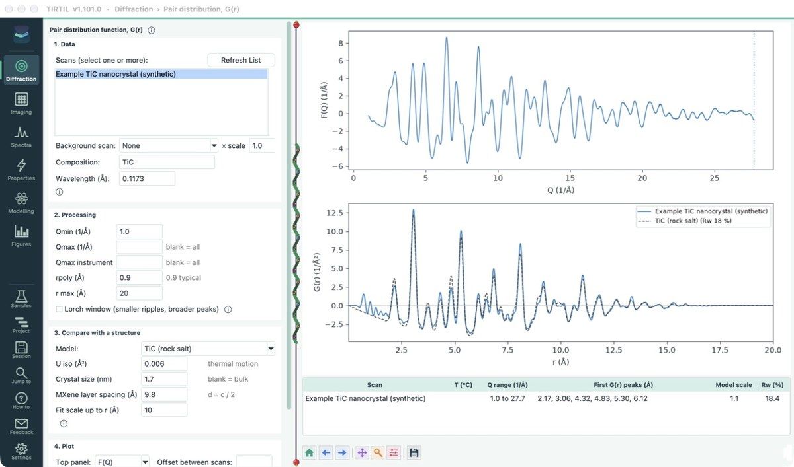
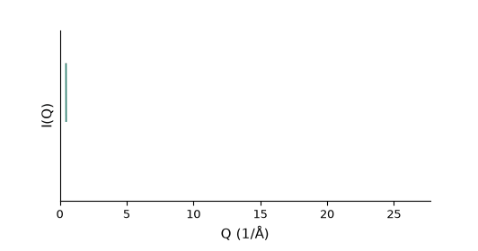

Diffraction
Pair distribution, G(r)
Distances between atoms from total scattering.

Steps
Refresh ListLoad scans on the Overlay plot page, then pick them here with an empty-holder background, the composition and the wavelength.- The pattern becomes F(Q) = Q[S(Q) - 1]: scaled by the scattering factors, with a smooth polynomial (rpoly) taken out.
Compute G(r)A sine transform up to Qmax gives G(r): each peak is a distance between atoms.- Compare with a structure (TiC, Ti3AlC2, a Ti3C2 layer or a CIF), cut off at the same Qmax.
Export CSV...Export G(r), the model and F(Q), or the figure.
How it works

Worked example
TiC: Ti-C at a/2 = 2.16 Å and Ti-Ti at a/√2 = 3.06 Å. A 1.7 nm crystal: G(r) dies out by 17 Å. Qmax = 28 1/Å gives peaks about π/Qmax = 0.11 Å wide.
In TIRTIL: How to (⌘/) › Try It With Example Data loads this example.